OrcaX 감자/보리 게임 설명서
OrcaX 감자/보리 농장에 방문해주셔서 감사합니다.
이곳은 직접 농사를 짓고, 수확한 농작물로 다양한 식품을 가공하며
토큰(ORCX)도 벌 수 있는 즐거운 체험 공간입니다.
아래 게임 설명서를 참고해, 자신만의 농장과 가공식품을 만들어보세요!
"항상 풍성한 수확과 행운이 함께하길 바랍니다. 🌱🥔🌾"
- "고래잡이선장"
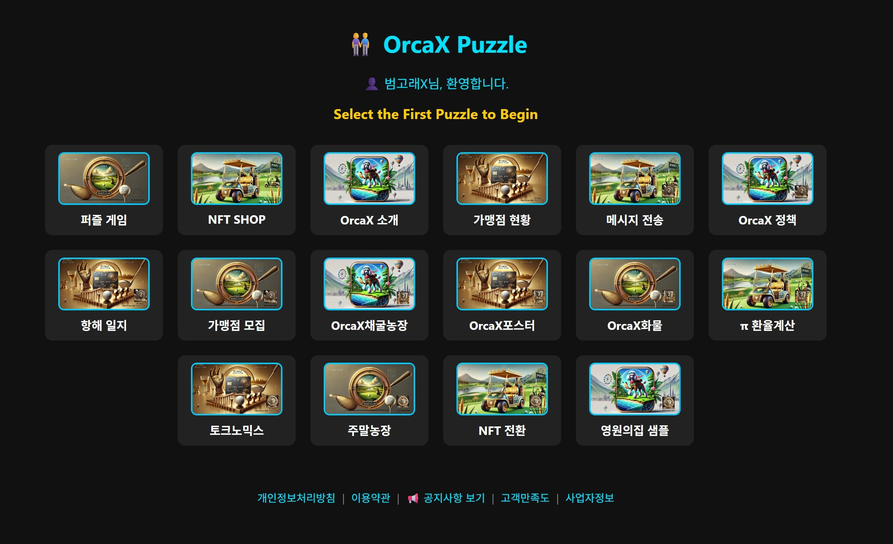
OrcaX채굴농장으로 들어가는 법 & 의미
메인 퍼즐 화면에서 "OrcaX채굴농장" 카드를 클릭하면 감자농장/채굴 게임 시스템으로 이동합니다.
이 메뉴에서 OrcaX 생태계의 토큰 채굴, 감자 심기/수확, 아이템 획득, 주말농장/파크골프/가족형 체험이 모두 연동됩니다.
💡 메인에서 "OrcaX채굴농장" 클릭 = 감자농장 게임(채굴, 수확, NFT) 바로 진입
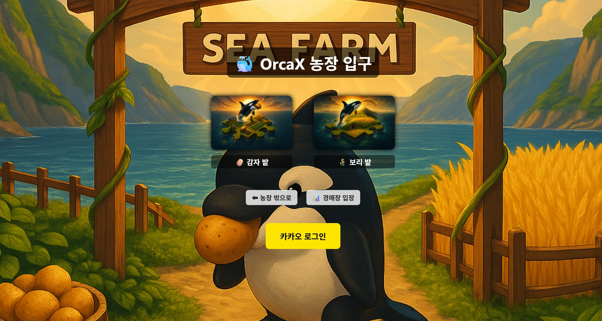
🥔 OrcaX 감자농장 입구 & 로그인 안내
중앙에 "감자 밭", "보리 밭" 버튼이 있고, 하단엔 "농장 밖으로", "경매장 입장"이 있습니다.
비로그인 시에는 노란색 카카오 로그인 버튼, 로그인 후엔 환영 메시지와 로그아웃 버튼이 나옵니다.
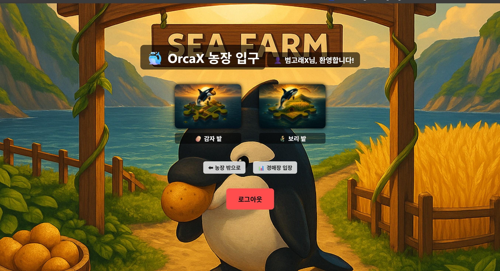
감자/보리밭 입장 & 로그인상태
카카오 로그인을 마치면 우측 상단에 닉네임 환영 메시지가 나오고, 하단 버튼이 로그아웃으로 바뀝니다.
원하는 밭을 클릭해 입장하세요.
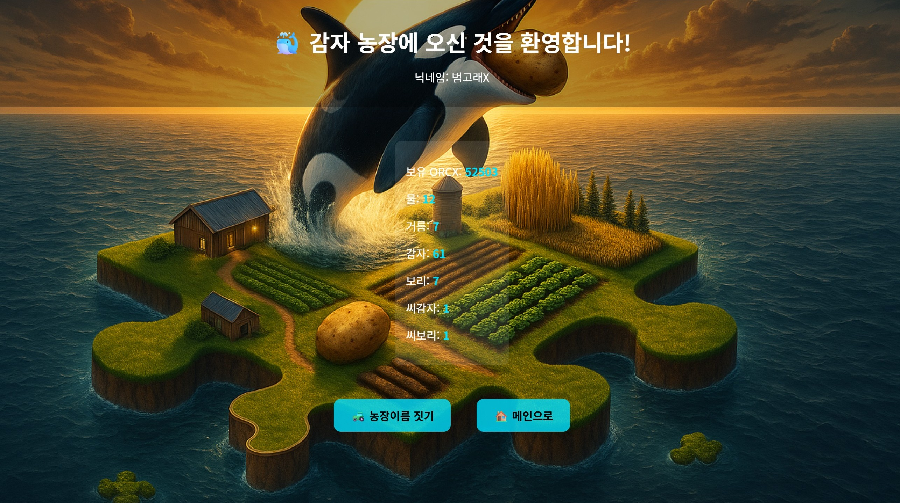
🧩 감자 농장 대시보드
"감자 농장에 오신 것을 환영합니다!"
내 닉네임, 자산 현황(ORCX, 물, 거름, 감자, 보리, 씨감자, 씨보리) 등이 한눈에 표시됩니다.
하단 "농장이름 짓기", "메인으로" 버튼 포함.
🌱 감자 농장 이름 짓기
상단에 농장주 닉네임, 중앙에 입력란이 제공되어 원하는 농장명을 입력 후 등록할 수 있습니다.
농장 이름으로 내 농장에 개성과 몰입감을!
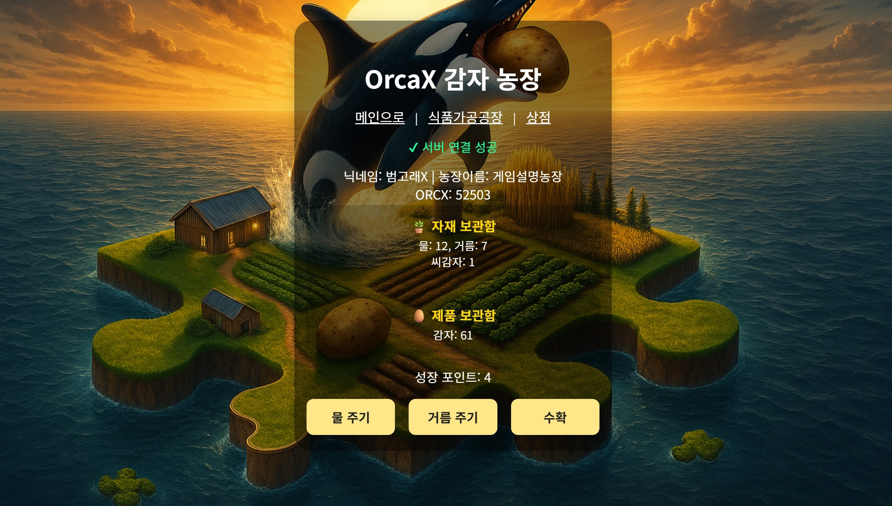
🥔 OrcaX 감자 농장 게임 (자원 지급 & 씨감자 구매)
자재 보관함(물, 거름, 씨감자), 제품 보관함(감자) 모두 표시
"물 주기, 거름 주기, 수확" 버튼으로 심기-키우기-수확
※ 최초 로그인시 물10, 거름10, ORCX10만 지급. 씨감자(씨앗)는 직접 상점에서 구매해야 시작 가능!
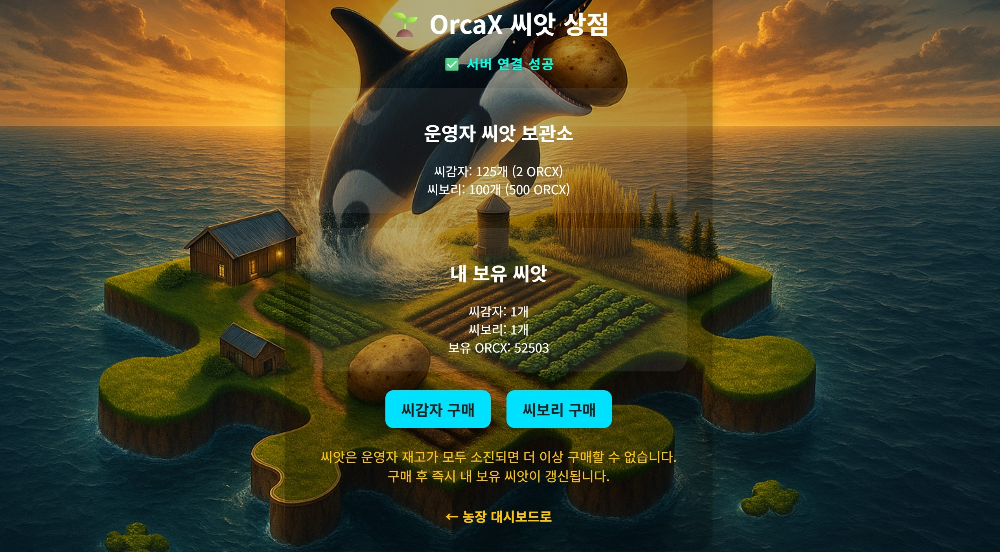
🥔 씨감자(씨앗) 상점 안내
씨감자, 씨보리 개수/가격, 내 보유현황, ORCX 표시
[씨감자 구매] 클릭 시 2 ORCX 차감, 즉시 씨감자 1개 지급(운영자 재고 소진 시 구매불가)
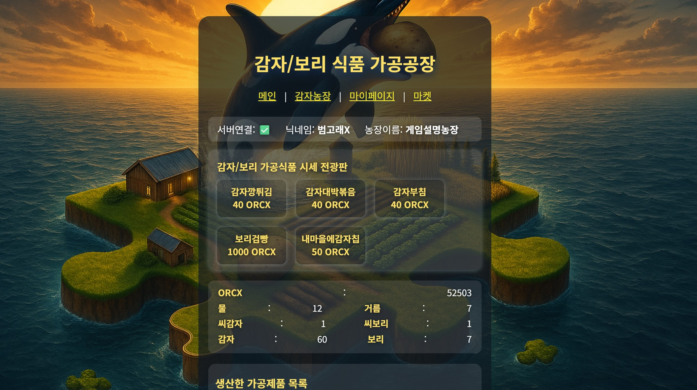
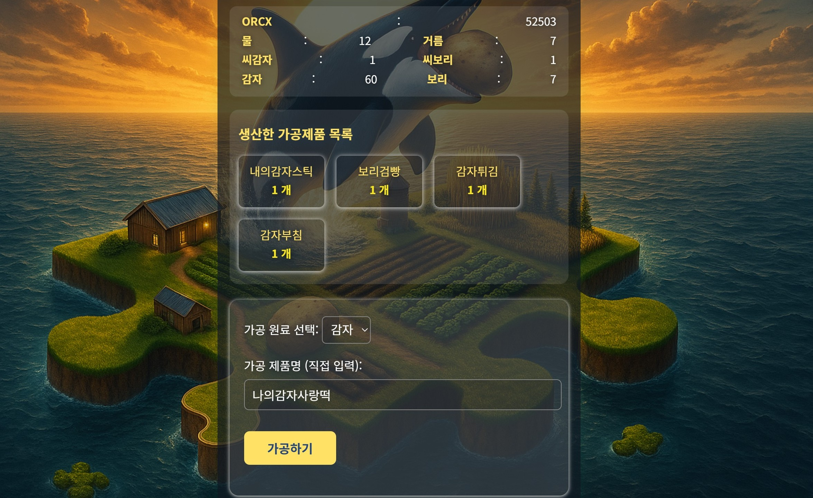
🏭 감자/보리 식품 가공공장 게임 설명서
중앙 상단에 "감자/보리 식품 가공공장" 타이틀, 상단 메뉴, 자산현황, 가공식품 시세 전광판이 표시됩니다.
아래쪽엔 내가 보유/생산한 가공제품 목록, 가공 원료 선택과 가공 제품명 직접 입력란, 가공하기 버튼으로 자신만의 가공식품을 만들어 저장/판매 가능.
(제품명 2~18자, 띄어쓰기 안됨, 최대 12종 저장)
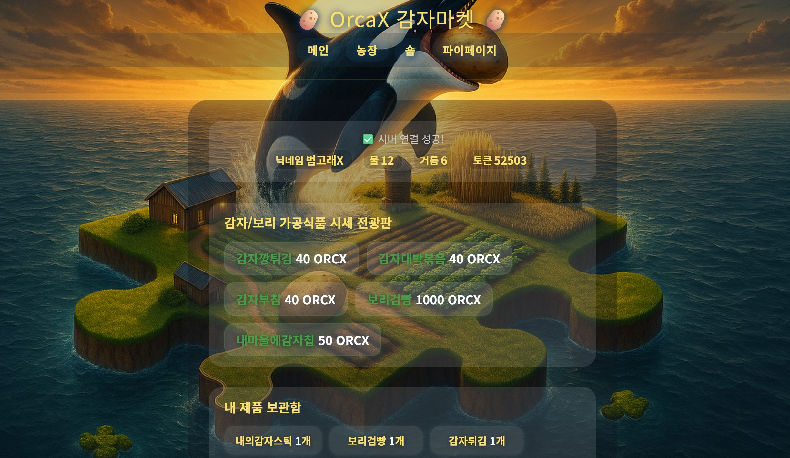
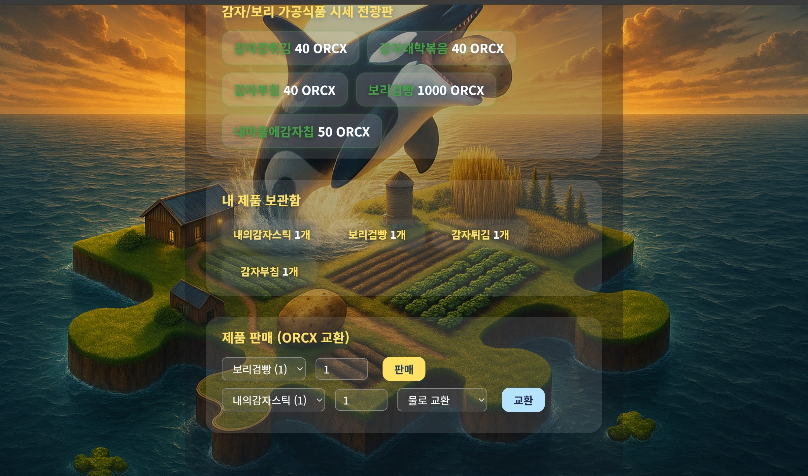
🛒 OrcaX 감자마켓 설명서
실시간 가공식품 시세 전광판, 내가 생산한 가공제품 보관함, 즉시 판매/교환 기능.
판매시 ORCX 토큰, 교환시 물/거름 획득.
모든 기능은 로그인만 하면 서버에서 자동 연동됨.
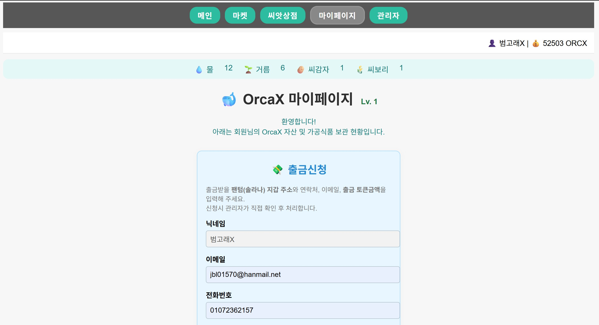
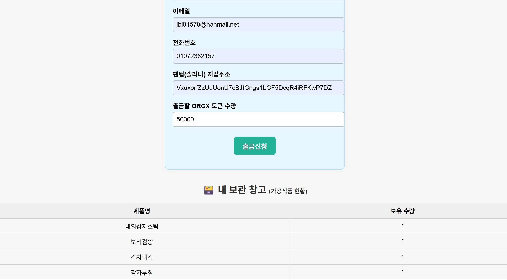
📒 OrcaX 감자농장 마이페이지
상단 주요 메뉴(메인, 마켓, 씨앗상점, 마이페이지, 관리자).
출금신청(팬텀 지갑주소, 이메일, 전화, 출금토큰 입력),
내가 생산한 가공식품 현황(표), 50,000 ORCX 이상 시 출금 가능/보리농장 입장 가능.
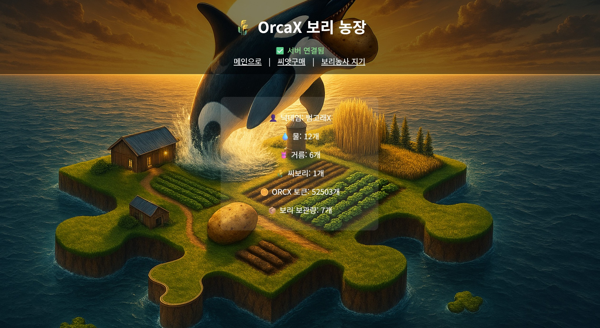
🌾 OrcaX 보리 농장 안내
5만 ORCX 이상만 입장 가능, 씨보리 있으면 즉시 보리농사 시작.
내 자산(물, 거름, 씨보리, ORCX, 보리 보관량), 상단 메뉴: 메인/씨앗구매/보리농사짓기.
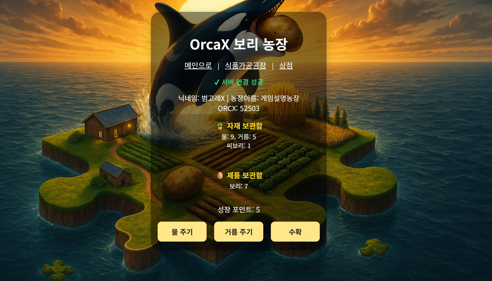
OrcaX 보리 농장 – 농사 짓기(파밍) 화면
물, 거름, 씨보리 자원 사용(성장포인트 5 이상시 수확), 보리 수확은 자동 보관함 저장.
물주기/거름주기/수확 버튼으로 플레이.
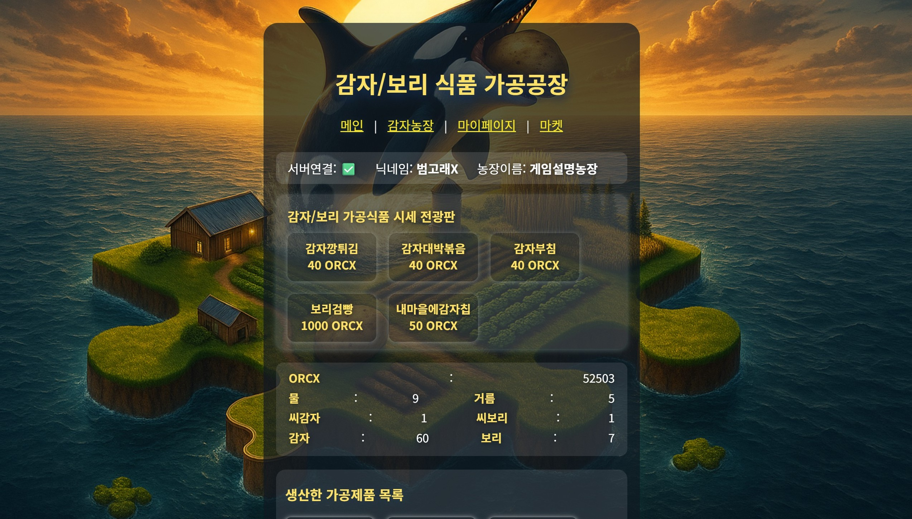
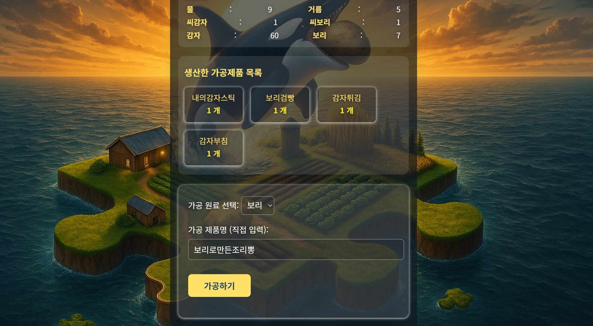
감자/보리 식품 가공공장 사용법 (보리)
수확한 감자/보리를 다양한 식품으로 가공, 가공제품은 마켓에서 판매·교환.
자산현황/원료 선택/제품명 직접입력/가공하기 버튼, 실시간 가공식품 시세 전광판.
원료가 1개 이상 필요, 가공시 1개 차감, 생산된 가공식품은 즉시 목록 추가